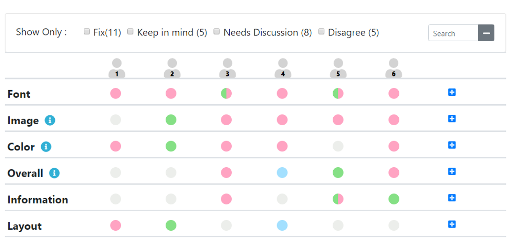
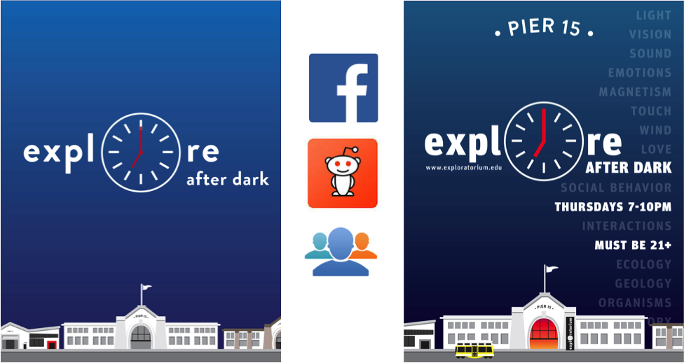
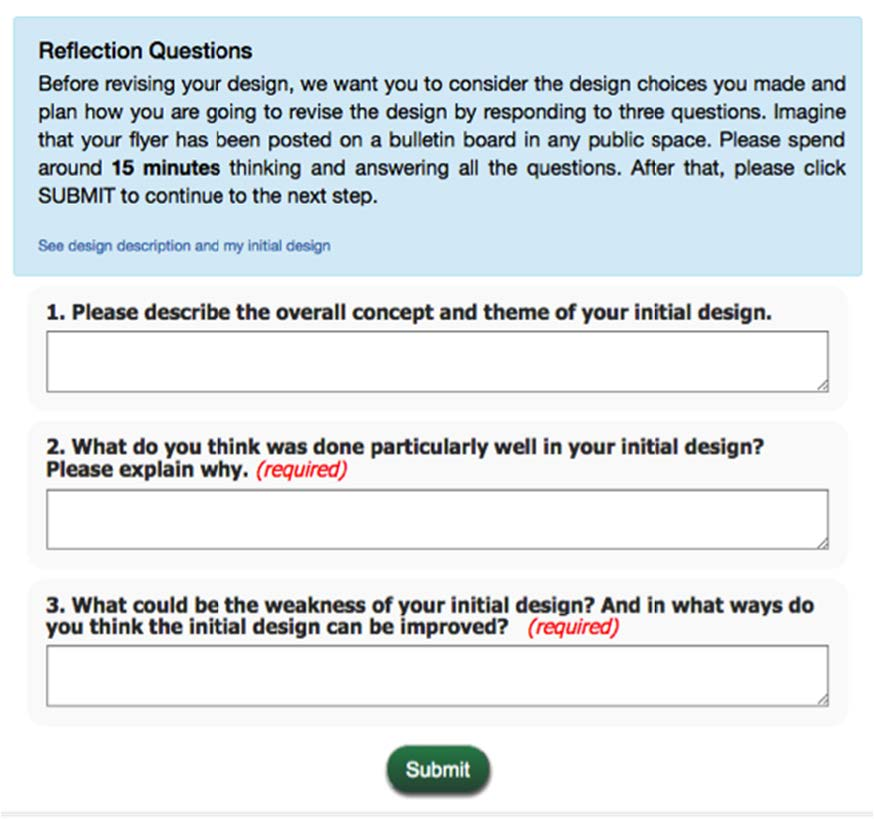
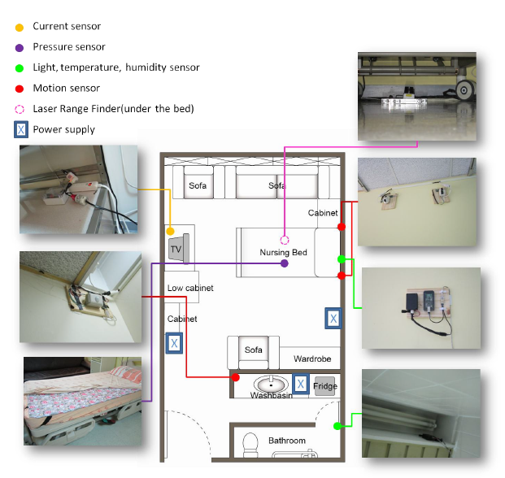
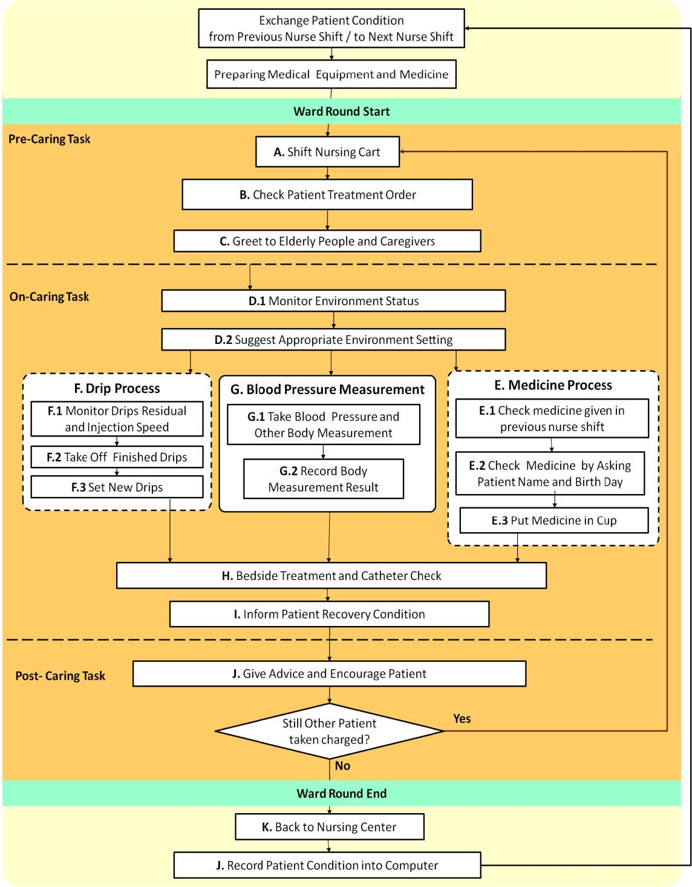
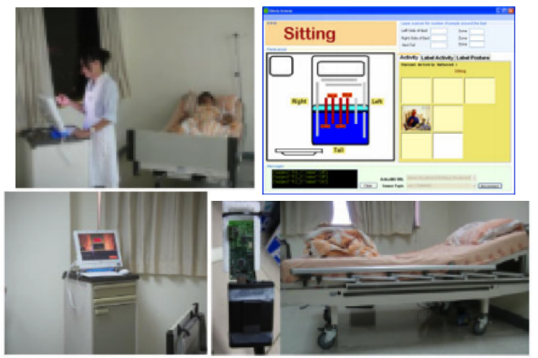
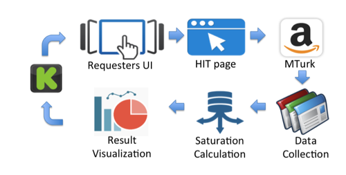
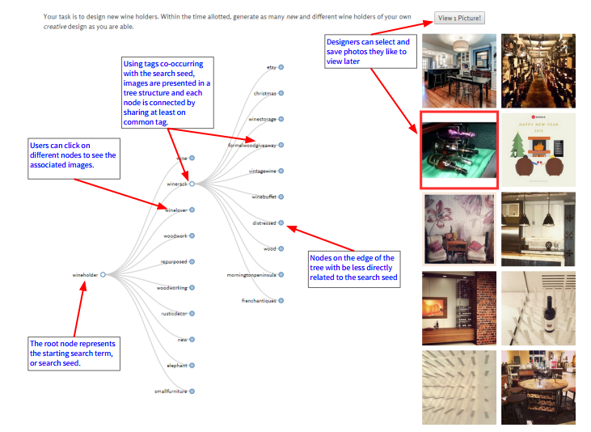
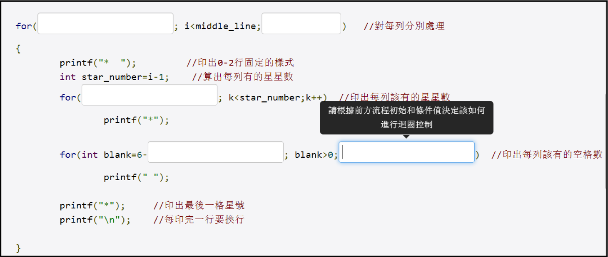

HCI/UX Researcher | Ph.D. in Computer Science | Curriculum Vitae
Hi! I am a final-year Ph.D. student in the Computer Science Department at the University of Illinois at Urbana-Champaign, working with Prof. Brian Bailey. My dissertation studies how to re-design creativity support tools to meet the growing national demand for design innovation education. Before I joined UIUC, I earned my M.S. degree from National Taiwan University with a concentration of Artificial Intelligence. My master thesis contributes a pervasive healthcare system that had been deployed in a real-world hospital for six-months. My thesis won the Best Master's Thesis award from Taiwanese Association for Artificial Intelligence and resulted in a Patent from Taiwan.
I am fascinated by bridging the humanities and the sciences. In particular, my dissertation work synthesizes insights from design, psychology, education, and computer science. In the past, I have also closely collaborated with experts from robotics and medical domain. This interdisciplinary and human-centered research approach allow me to produces innovative solutions that a single discipline would not be able to achieve. You can find my full cv here or contact me at yyen4@illinois.edu.
| yyen4@illinois.edu |
| C.9 | Yu-Chun Grace Yen, Joy O. Kim, and Brian P. Bailey. Decipher: An Interactive Visualization Tool for Interpreting Unstructured Design Feedback from Multiple Providers. ACM Conference on Human Factors in Computing Systems (CHI ‘20). to appear. [Available upon request] |
| C.8 | Chi-Hsien Yen, Yu-Chun Grace Yen, and Wai-Tat Fu. An Intelligent Assistant for Mediation Analysis in Visual Analytics. ACM Conference on Creativity and Cognition (IUI ‘19) [pdf] |
| C.7 | Yu-Chun Yen, Steven P. Dow, Elizabeth Gerber and Brian P. Bailey. Listen to Others, Listen to Yourself: Combining Feedback Review and Reflection to Improve Iterative Design. ACM Conference on Creativity and Cognition (C&C) 2017 [pdf] |
| C.6 | Helen Wauck, Yu-Chun Grace Yen, Wai-Tat Fu, Steven P. Dow, Elizabeth Gerber and Brian P. Bailey. From in the Class or in the Wild? Peers Provide Better Design Feedback Than External Crowds. ACM Conference on Human Factors in Computing Systems (CHI) 2017[pdf] |
| C.5 | Yu-Chun Yen. Enhancing the Usage of Crowd Feedback for Iterative Design. ACM Conference on Creativity and Cognition (C&C) 2017 (Doctoral Consortium) [pdf] |
| C.4 | Yu-Chun Grace Yen, Steven P. Dow, Elizabeth Gerber and Brian P. Bailey. Social Network, Web Forum, or Task Market?: Comparing Different Crowd Genres for Design Feedback Exchange. ACM Conference on Designing Interactive Systems (DIS) 2016[pdf] |
| J.1 | Chun-Feng Liao, Yu-Chun Grace Yen, Yu-Chiao Huang, Li-Chen Fu. An Empirical Study on Engineering a Real-World Smart Ward Using Pervasive Technologies. IEEE Systems Journal 2016 [pdf] |
| C.3 | Yu-Chiao Huang, Chun-Feng Liao, Yu-Chun Yen, Li-Jen Hou, Li-Chen Fu, Chia-Hui Chen, Chiung-Nien Chen. An Extensible Situation-Aware Caring System for Real-World Smart Wards. International Conference on Smart Homes and Health Telematics (ICOST) 2012[pdf] |
| C.2 | Yu-Chun Yen, Jiun-Yi Li, Ching-Hu Lu, Tsung-Han Yang and Li-Chen Fu. Human-Centric Situational Awareness in the Bedroom. International Conference on Smart Homes and Health Telematics (ICOST) 2011[pdf] |
| C.1 | Yu-Chun Yen, Ching Hu Lu, Yi Chung Cheng, Jing Siang Chen, Li Chen Fu. Towards an Evidence-Based and Context-Aware Elderly Caring System Using Persuasive Engagement. International Conference on Human-Computer Interaction (HCII) 2011[pdf] |
| T.1 | Yu-Chun Yen. Human centric and Context aware Perva sive Healthcare System in the Hospital for Elderly People. 2011. National Taiwan University. [pdf] |
| P.1 | Yu-Chun Yen, Li-Chen Fu, Tsung-Han Yang, Fang-Cheng Liu, Chun-Feng Liao. An information processing system based on multi-layer inference architecture. Taiwan Patent ID: I486914. June, 2015-May, 2032 [LINK] |
| University of Illinois at Urbana-Champaign | Ph.D. in Computer Science
Human-Computer Interaction (Interactive Computing) Dissertation Title | Turning feedback to actions through reflection, paraphrasing, and visualization. Committee | Dr. Brian P. Bailey (Advisor@UIUC), Dr. Karrie G. Karahalios (UIUC), Dr. Steven Dow (UCSD), Dr. Joy O. Kim (Adobe Research). Keywords crowdsourced feedback, creativity support tools, data visulization, creative workflow. Methods interview, survey, experimental design, prototying, statistic analysis, qualitative coding. |
| National Taiwan University | M.S in Computer Science
Intelligent Robot and Automation Lab (Smart Home Group) Master's Thesis | Human-centric and situation-aware pervasive healthcare system in the hospital for elderly People. Committee | Dr. Li-Chun Fu (Advisor@NTU), Dr. Chiung-Nien Chen (NTU Medicine), Dr. Cheryl Chia-Hui Chen (NTU Nursing), Dr. Mu-Chun Su (NCU HCI). Keywords pervasive computing, activity recognition, healthcare, artificial intellegence, persuasive technology. Methods field observation, experimental design, prototying, statistic analysis, qualitative coding. |
| National Taiwan Normal University | B.S in Computer Science
Computer Vision and Image Understanding Lab Senior Thesis | Vision-based Gymnastics Motion Recognition System. Advisor | Dr. Chiung-Yao Fang |
|  |
Decipher: An Interactive Visualization Tool for Interpreting Unstructured Design Feedback from Multiple Providers
ACM CHI'20
In creative work such as design, writing, and engineer, intreprting feedback from diverse audiences is hard because the feedback can vary in focus, differ in structure, and contradict each other. In this work, we conducted a formative study identifying the common strategies and criteria that experts employ when interpreting feedback from multiple providers. Based on the findings, we created a new tool (Decipher) that enables designers to visualize and navigate a collection of feedback using its topic and sentiment structure. We found that Decipher helped users feel less overwhelmed during feedback interpretation tasks and better attend to critical issues and conflicting opinions compared to using a typical document-editing tool. screener survey interview think-aloud approach qualitative coding within-subjects experiments comparative survey one-sampled t-test |
|  | Combining Feedback Review and Reflection to Improve Iterative Design
ACM CC'17
For feedback to be effective, it requires the recipient to interpret, learn, and act on it. To help users better translate feedback into actions, we draw inspirations from learning and design by developing a lightweight reflection activity and testing its placement relative to feedback review for iterative design. We found that reflection after feedback review led to the largest increase in the revised design quality and without designers over-estimating the amount of improvement they made. Designers reported that the reflection activity helped them recall their design goals, question their choices, and plan and prioritize their revisions. This work offers deeper empirical understanding of how ordering reflection and feedback review affects designers’ performance and perceptions for acreative design task. We also offer implications for implementing a reflection activity in feedback platforms to encourage its adoption. online user study between-subjects experiments task analysis (logged data analysis) survey qualitative coding ANOVA + post-hoc tests |
|  | Investigating How Crowd Incentives Affect Online Feedback Generation
ACM DIS'16, ACM CHI'17
Increasingly, users seek feedback on their creative work from social networks, Web forums, and paid task markets which demand different amounts of social capital, financial resources, and time. However, it is unclear how the choice of the crowd platform affects feedback generation. In this study, we recruited designers to create visual designs for problems of their own choosing and revised the designs based on the feedback received from MTurk (financial), designers’ own social networks accessed via Facebook, Twitter, and email (social), and Reddit or other Web forums (enjoyment). We measured key attributes of the feedback including perceived quality, quantity, length, and valence; and categorized its content. Based on the results, we formulate an emergent framework for recommending which crowd platforms to solicit feedback from and at which iteration to maximize attributes of interest including quality, quantity, content category, and valence online user study between-subjects experiments task analysis (logged data analysis) survey qualitative coding ANOVA + post-hoc tests |
|   | An Empirical Study on Engineering a Real-World Smart Ward Using Pervasive Technologies
ACM HCII'11, IEEE System Journal 2016, ACM ICOST'12
The shortage of medical staffs has become a critical issue due to the rapid growth of aging population. Numerous attempts have been made on devising pervasive healthcare systems to precisely and continuously monitor patients’ health status. However, the transformation from prototypes in the laboratory to practical systems in a medical institution is still a challenging task. My master's thesis adopts an ethnography-like approach to probe system requirements. Specifically, I performed field observations at the real-world hospital for ten full working shifts (including day and night shifts). Based on my observations and recorded data, I conducted interviews with medical staff and performed a focus group session to confirm the insights generated from the field study. I then designed and deployed a smart ward aiming at revitalizing post-surgery elderly patients both in physical and mental factors. My thesis and follow-up studies report the progress and lessons learned from the six-month deployment of our healthcare system in a real-world smart ward of National Taiwan University Hospital. We describe techniques proposed to deal with three essential challenges: design for essential needs, design for user acceptance, and design for maintenance. The system is evaluated empirically by deploying two applications in the field. Based on the results of field interview and questionnaires, this work is a milestone of a persistently running pervasive healthcare system deployed in a hospital. Awarded as the Best Master's Thesis in the Taiwanese Association of Artificial Intelligence 2011 |
|  | Human-Centric Situational Awareness in the Bedroom
International Conference On Smart Living and Public Health 2011
Monitoring bedroom activities is critical for elderly care. The risk of tripping increases at the moment when the elder people leave bed; dizziness condition may occur when they sit up from a long lying position. In addition, knowing the total time of caregivers being around may also imply the level of social engagement. However, bedroom is the place that requires the most privacy concern. In this work, we propose the use of ambient sensors and context fusion techniques to monitor five on-bed and bed-side activities including Sleeping, Sitting, Leaving Bed, Caregiver Around and Walking. Experimental results demonstrate the high promise of our proposed methods for bed-related situation awareness. This work results in Taiwan Patent ID: I486914 |
|  | To Stop or Not to Stop? A Case Study of an Early intervention for Data Collection
Deciding the sample size of a qualitative survey is a critical issue. Insufficient feedback might lose possible insights while too much feedback results in a waste of time and money. We addressed this problem by calculating the information saturation level and visualizing the evolution of main topics derived from feedback pool. We built an easy-to-use Web tool allowing Kickstarter project creators to collect feedback from Amazon Mechanical Turk. An interactive visualization was then presented to the creators to help them better understand the current dataset. |
|  | Brainstagram: Presenting Diverse Visually Inspiring Stimuli for Creative Design
In this project, we built a data-driven brainstorming tool leveraging Instagram hashtags to assist designers in finding inspiration. One challenge designers face when brainstorming is knowing how to search for unlikely sources of inspiration. We present Brainstagram, which organizes visual stimuli through tag co-occurrence to display related concepts. This allows users to easily navigate from relevant to unexpected images. Our pilot study demonstrates that Brainstagram as a potentially effective tool in the brainstorming process.
|
|  | Cloud-based collaboratvie learning platform for computer science education
National Science Concile Project.
Before I joined UIUC, I led a NSC projects (Taiwan)studying and implementing cloud-based collaborative learning tools. I was the leading researcher and developer in the project. We built a cloud-based programming platform supporting cloze tasks that enhance the understanding of learning topics with multiple code segments. We also implemented in-time ask-for-help features allowing students to collaboratively learn with peers. |